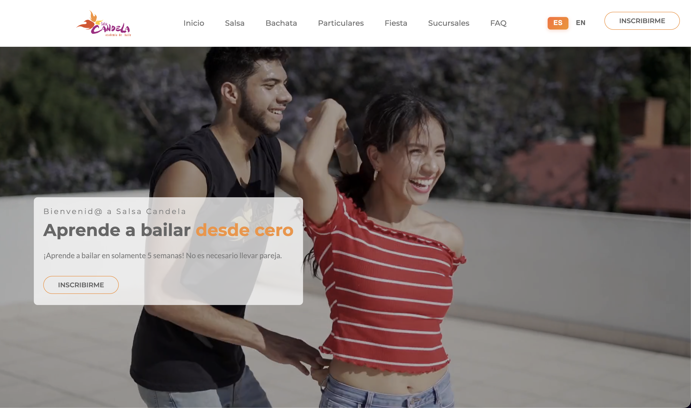
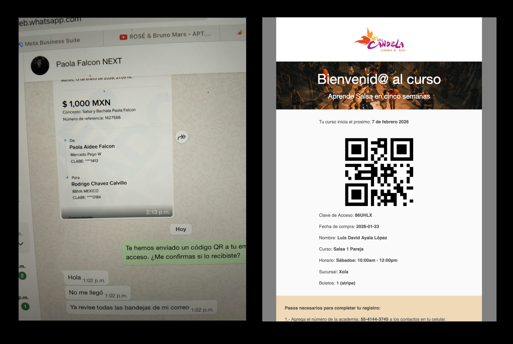
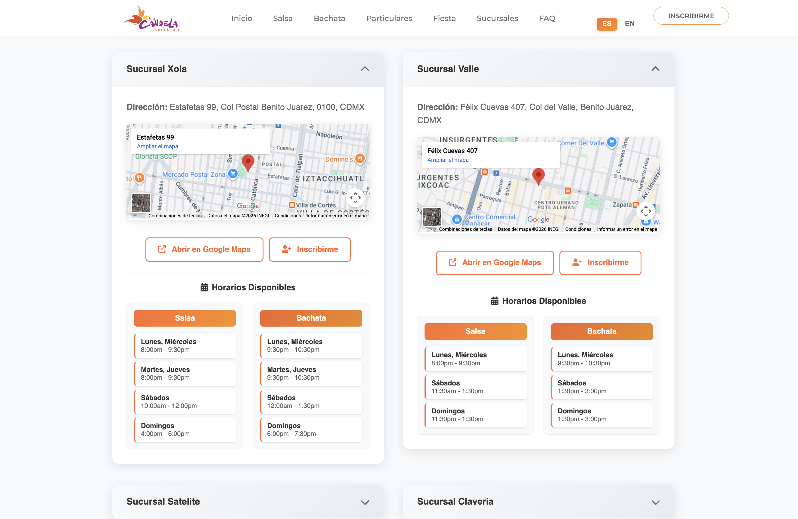
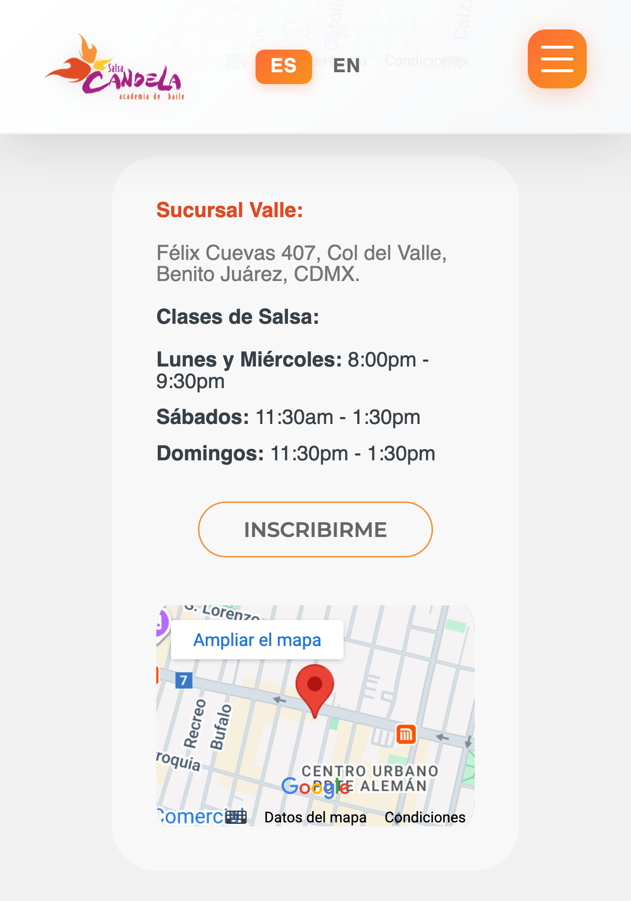
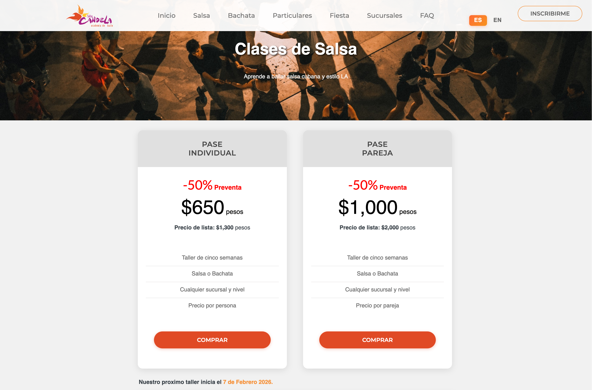
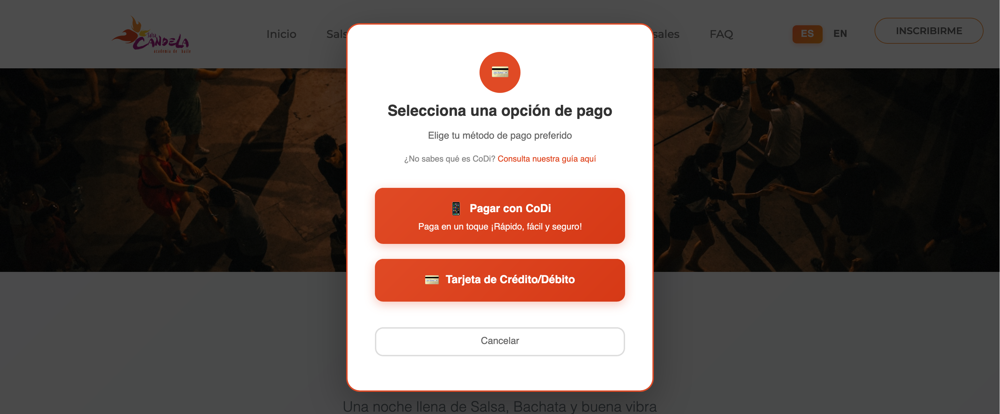
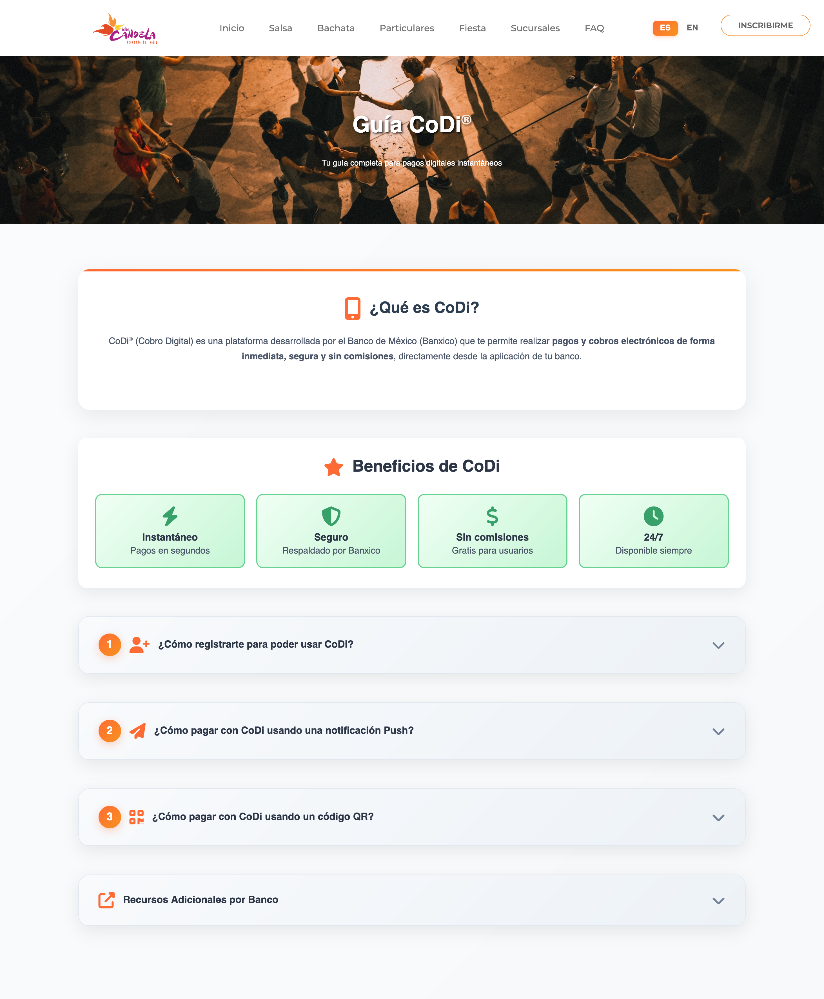
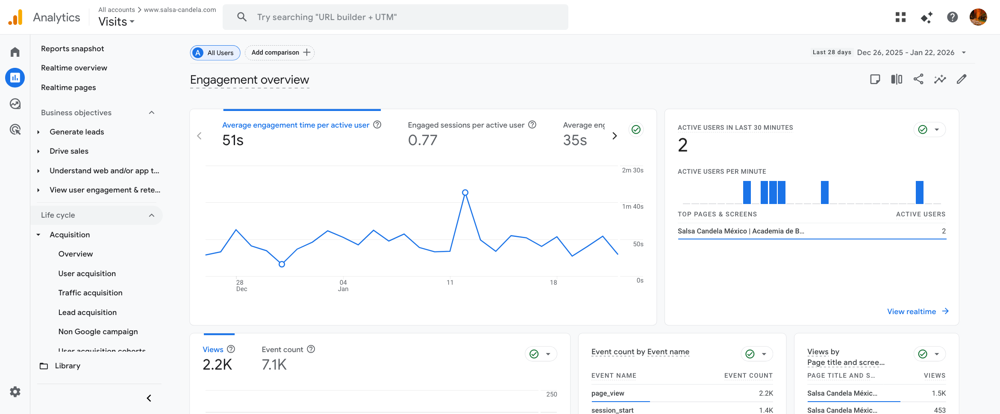
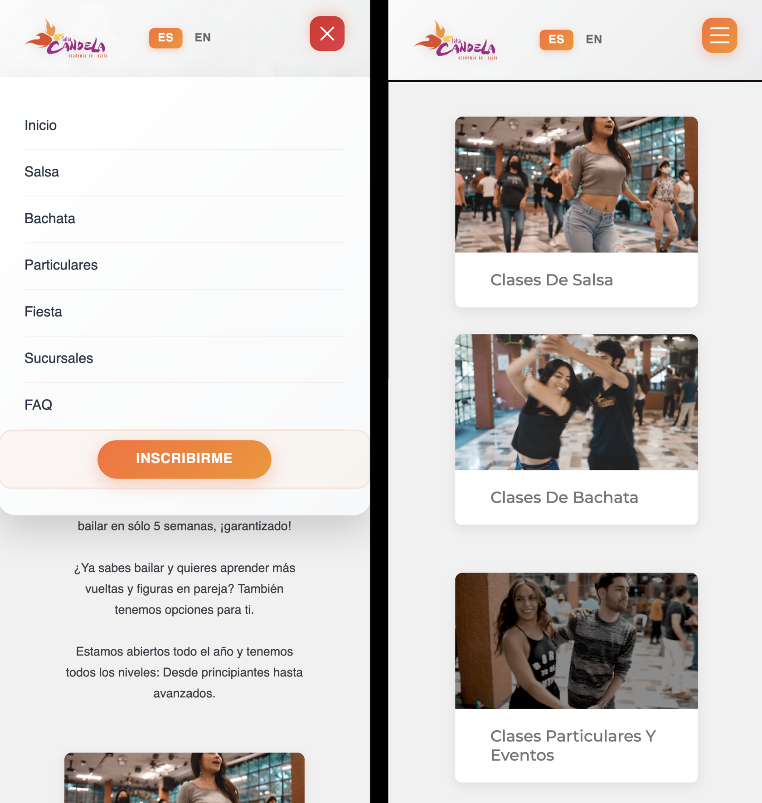
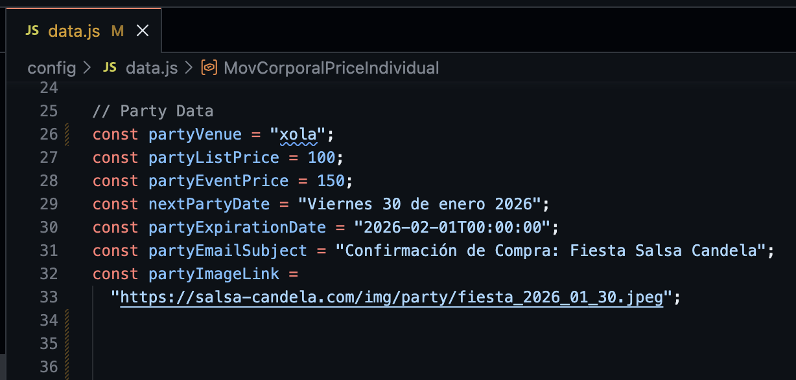

Table of Contents
Salsa Candela is a well-established dance academy in Mexico City with over 12 years of experience teaching salsa and bachata across 5 branch locations. Despite their success, they still needed to automate their operations and back-office processes to scale effectively and keep improving their customer experience.
This web application is part of a larger ongoing project that has transformed their operations from phone-based manual registration to a 24/7 automated system with comprehensive analytics, flexible payment options, a mobile application and a WhatsApp bot.
If you want to explore the live website, visit www.salsa-candela.com.
Project Overview
This project created a web application for a multi-location dance academy, facilitating discovery and enrollment.
Project Scope
- 5 Branch Locations: Xola, Valle, Clavería, Coapa, and Satélite across Mexico City metro area
- Multiple Course Types: Salsa, Bachata, Body Movement and Private Classes
- Automated Registration: 24/7 online enrollment with payment processing integration
- Event Management: Monthly dance party system with ticket sales
- Analytics Platform: 18+ tracked events across 8 categories for business intelligence
- Payment Integration: Several payment methods including CoDi, credit cards, transfers, and cash
Business Impact
- 24/7 Availability: From 9am-9pm phone hours to always-on registration system
- Time Savings: Estimated 40 hours/week in administrative work
- Payment Flexibility: Several payment methods vs. cash-only
- Data Intelligence: From zero analytics to 18+ custom tracked events
- Market Position: Professional digital presence competing with larger franchises
The Business Challenge
Despite many years of success, Salsa Candela faced several critical challenges that were limiting their growth potential:
1. Manual Registration Bottleneck
Every new student required a 10-15 minute WhatsApp chat during business hours. This created bottlenecks during peak enrollment periods and manual registration checks from the administrative staff at the dance academy.
2. Lack of Integrated Payment Options
Cash-only, bank transfer, and PayPal payments originally allowed for limited accessibility. Managers would have to process payments manually on course start, creating delays and friction, as well as making it hard to track revenue.
3. Zero Business Intelligence
With no data tracking, business decisions were based on intuition rather than insights. Questions like "Which location attracts the most interest?" or "Do students prefer individual or couple pricing?" couldn't be answered.

Before: Phone-based manual registration. After: 24/7 automated online system with instant confirmation
The Solution
The solution was a custom-built website, with automated registration, comprehensive analytics, and flexible payment options.
Strategic Approach
Rather than using a website builder, I built a custom Node.js/Express application specifically designed around the academy's business model:
- Configuration-Driven: Non-technical staff can update course dates, pricing, and party events by editing simple config files
- Analytics-First: Every user interaction tracked to provide actionable business intelligence
- Payment-Flexible: Several payment methods including CoDi (Mexico's commission free digital payment system)
- Mobile-Optimized: Custom responsive design for Mexico's mobile-first market
- Location-Unified: Single website serving all 5 branches with location-specific flows

Homepage hero section: Full-screen dance video immediately communicates the value proposition - "Learn to dance in just 5 weeks!"
Why Custom Development?
While platforms like WordPress or Wix seem easier, a custom solution provided:
- Lower Costs: $10-20/month hosting vs. $100-200 for Wix / WordPress with plugins
- Better Performance: Fast load times critical for mobile users on 3G/4G networks
- Full Control: Exact features needed, nothing more
- Scalability: Can evolve with business needs without platform limitations
- Security: No vulnerable plugins, bloated frameworks or vendor lock-in
Key Features
The website includes several features designed to increase enrollment, reduce admin overhead, and provide business insights.
Class Type Registration System
Students can browse class schedules across all 5 locations and register for their preferred branch from a single page.

Desktop: Side-by-side comparison of all 5 locations

Mobile: Vertical stack optimized for phone screens
Business Value:
- Maximizes Enrollment: Students see all options at once, increasing likelihood they find a convenient schedule
- Balances Capacity: Analytics reveal which locations are underutilized, informing marketing decisions
- Reduces Barriers: Students pick what works for them and register instantly without back-and-forth
How It Works:
- Student visits Salsa or Bachata class page
- Views schedule table showing all locations with mid-week and weekend options
- Clicks "Inscribirme" (Register) for their chosen location
- Redirects to secure payment system with location pre-selected location
- Student receives instant confirmation and receipt
5-Week Intensive Learning Path
Value proposition: "Learn to dance in just 5 weeks"

Clear outcome (learn to dance) + specific timeframe (5 weeks) + transparent pricing = higher conversion
Business Value:
- Creates Certainty: Learn the basics in a set timeframe (10 classes over 5 weeks)
- Predictable Revenue: New cohorts start with 4 schedule options (Sat, Sun, Mon, Tue) on a rolling basis
- Sets Expectations: Customers know exactly what they're buying
Pricing Strategy:
- Salsa: 1,300 MXN individual / 2,000 MXN couple
- Bachata: 1,000 MXN individual / 1,500 MXN couple
- Private Classes: Tiered packages (1 class: 600 MXN, 5 classes: 2,500 MXN, 10 classes: 4,000 MXN)
Technical Innovation:
Course start dates are calculated dynamically. The system automatically shows "Next course starts Saturday, [date]" without manual updates, keeping the website evergreen.
Dance Party Events
Events that serve triple purpose: additional revenue streams, student retention, and acquisition for new students.

Monthly dance parties prominently featured with complete event details and easy ticket purchase
Business Value:
- Revenue Stream: 100-150 MXN per ticket creates consistent attendance revenue
- Student Retention: Monthly events let students practice what they learnt in their courses
- Lead Generation: Public attendees become potential students
- Community Building: Regular events create social bonds that reduce turnover
Event Details:
- Schedule: Free salsa class at 8:30 PM, party 9:00 PM - 3:00 AM
- Music: Salsa, Timba, Bachata
- Pricing: Presale (100 MXN) vs. door (150 MXN)—promotes advance online purchase
- Flexible Venues: Rotates between locations
Configuration-Driven Updates:
Party details are managed through a single config file. Changing the venue, date, pricing, or promotional images takes 2 minutes—no code changes required.
Payment Methods
Multiple payment options remove financial barriers and accommodate all customer preferences, from tech-savvy youth to traditional cash users.

Payment modal explicitly asks customers to choose their preferred method upfront, reducing surprises and cart abandonment
Available Methods:
- CoDi: Mexico's instant commission free bank transfer system
- Credit/Debit Cards: Stripe integration via admin system
- Bank Transfers: Traditional option
- OXXO/7-ELEVEN Cards: Popular convenience store option in Mexico
- Cash: In-person at branch locations
Business Value:
- Maximizes Conversion: No one turned away due to payment limitations
- Market Positioning: Modern payment options attract younger demographics
- Data Insights: Track which payment methods are most popular to inform future strategy
CoDi Promotion Strategy:
A dedicated /guia-codi page educates first-time
users about Mexico's instant digital payment system. This guide
reduces payment abandonment and positions the academy as
tech-forward while appealing to customers who prefer instant
bank transfers over credit cards. It also offers the business a
commission-free payment option, improving margins.

Dedicated CoDi guide page converts makes instant digital payments accessible to all customers
Business Intelligence
18+ tracked events across 8 categories provide actionable insights that enable business decision-making with a data-driven strategy.

Custom analytics tracking reveals which locations, class types, and pricing tiers attract the most interest
Tracked Events Include:
- Purchase Intent: Salsa individual/couple, Bachata individual/couple, Private class tiers, Party tickets
- Payment Method: CoDi vs. Credit Card selection with referral code tracking
- Branch Registration: 5 location-specific events reveal which branches get most interest
- Map Interactions: Track location research behavior
- Contact Methods: WhatsApp, Email, Facebook, Instagram engagement
Business Questions Answered:
- "Which location should I focus marketing spend on?" → Branch registration click data
- "Do students prefer individual or couple pricing?" → Purchase intent tracking
- "Is CoDi promotion working?" → Payment method selection data
- "Which referral codes drive most party tickets?" → Referral code tracking
Analytics Documentation:
A documentation file explains what each event tracks, how to access Google Analytics, and how to interpret data for business decisions. This enables non-technical business owners to access insights without hiring consultants.
Design & User Experience
The design was made to be mobile first, visually engaging, and optimize the user journey from landing to registration."
Mobile-First Experience
Over 70% of traffic in Mexico is mobile. The website features custom responsive design optimized for phone screens:
- Hamburger Navigation: Smooth slide-in menu optimized for touch
- Responsive Tables: Desktop tables reorganize for vertical scrolling on mobile
- Touch-Optimized Buttons: Minimum 44x44px targets
- Click-to-Call: Phone number in footer
- WhatsApp Integration: Direct messaging from mobile

Custom mobile navigation with smooth animations and touch-optimized buttons
User Journey Optimization
First-Time Visitor Path:
- Hero Video: Immediately communicates value
- Value Proposition: "Learn to dance in 5 weeks!"
- Class Cards: Visual navigation to Salsa, Bachata, or Private classes
- Schedule Tables: See all 5 locations at once
- Clear Pricing: Transparent costs reduce purchase anxiety
- FAQ Section: 75+ Q&A pairs address objections
- Easy Registration: One-click to payment system
Technology Approach
The technology stack was chosen for simplicity, performance, and long-term maintainability.
Technology Stack
- Backend: Node.js + Express.js
- Frontend: Vanilla JavaScript
- Templating: EJS for server-side rendering (SEO-friendly, fast)
- Analytics: Google Analytics 4 + TikTok Pixel
- Payment: Stripe (via admin system) + CoDi (via CoDi API)
- Hosting: Minimal dependencies = $20/month hosting
Why These Choices?
1. Cost-Effective
- Only 4 runtime dependencies (express, ejs, dotenv, body-parser)
- No expensive database licenses or cloud services
- Can run on affordable shared hosting
2. Fast Performance
- Server-side rendering = instant page loads
- No client-side framework overhead
- Optimized for Mexico's mobile networks
3. Easy Maintenance
- Configuration-driven content (courseData.js, partyConfig.js)
- Non-technical staff can update dates and pricing
- Clear separation: views, routes, controllers
4. No Database = Simplicity
Course schedules and party details are stored in JavaScript configuration files instead of a database. This provides:
- Zero database costs
- Faster page loads: No database queries
- Simpler backups: Everything in Git version control
- Easier updates: Edit config file, redeploy
- No downtime: No database migrations

Configuration-driven approach: Non-technical staff can update event details without touching code
Challenges & Solutions
Every project faces obstacles. Here's how we solved the major challenges for Salsa Candela.
Challenge 1: Content Updates Without Developers
Problem: Dance academy staff are experts in teaching salsa, not coding. They need to update course dates and party details monthly without developer intervention.
Solution: Configuration-driven content management
- All dates, prices, locations in simple JavaScript config files
-
courseData.js: Course schedules through November 2026 -
partyConfig.js: Party title, date, location, images, pricing classSchedules.js: Class times by location
Why This Works: Non-technical staff edit:
date: "2025-12-12", redeploy, done. No database
migrations, no admin panel complexity.
Challenge 2: Payment Processing
Problem: Accepting cash payments only provides no traceability or accountability.
Solution: Enable payment systems (stripe, CoDi)
- Public website handles browsing and selection
- Registration redirects to secure admin.salsa-candela.com
- Admin system handles all payment data and processing
- User returns after confirmation
Business Benefit: Payment data never touches public website. Security, compliance, and traceability managed by dedicated admin system.
Challenge 3: 5 Locations, One Website
Problem: Each branch has different schedules and capacity. How to present all options without overwhelming users?
Solution: Registration flows by dance type and by location
- Salsa: All salsa clases in all locations
- Bachata: All bachata clases in all locations
- Sucursales: Find salsa & bachata classes by specific branch
In sucursales, we implemented a location finder, which helps users find their preferred branch by distance.
Lesson Learned: Showing everything builds trust. Hiding details to "simplify" would have reduced transparency and confused users.
Results & Impact
The website transformed Salsa Candela from a traditional service business to a digitally-enabled, data-driven operation.
Before vs. After Comparison

Transformation across every aspect of the business: registration, payment, marketing, and customer experience
Operational Efficiency Gains
- Registration Time: Eliminated 20 min waiting lines to a 2 minute online form
- Administrative Hours Saved: Estimated 40 hours/week in manual processing
- After-Hours Availability: 24/7 registration vs. 9am-6pm phone hours
- Payment Processing: Automated confirmation vs. manual verification
Business Intelligence Transformation
From Zero Data to Tracked Events:
- What are customers looking to find
- What is the conversion rate at each stage
- Who makes purchases by location and dance style
- Online vs cash adoption rates
- Marketing channel effectiveness (social, direct, search)
Customer Experience Improvements
Convenience:
- Research classes during lunch break instead of calling
- Register at midnight if that's when you decide
- Compare all 5 locations without making 5 phone calls
Transparency:
- See exactly what you're paying for (5 weeks, 10 classes, schedule options)
- Clear pricing—no "call for pricing" friction
- Refund and privacy policies accessible upfront
Confidence:
- 75+ FAQ answers reduce purchase anxiety
- See 12+ years of experience and established locations
- Read policies before committing
Future Enhancements
The architecture was designed for evolution. Here are potential future features that could be added as the business grows:
Student Portal
Allow students to log in and view their enrolled courses, track attendance, see progress through curriculum levels, and receive party event reminders.
Online Class Booking Calendar
Enable private class students to book specific time slots with instructor availability displayed in real-time.
Referral Program Dashboard
Incentivize existing students to bring friends with unique referral codes, tracking, and rewards (discounts or free party tickets).
Video Class Previews
Embed YouTube videos showing sample classes, instructor introductions, and student testimonials to help visual learners assess teaching style before committing.
Instructor Profiles
Showcase instructor bios, photos, teaching specialties (Cuban salsa vs. LA style), and personal dance journey stories to build trust and connection.
Multi-Language Support
Add English version of all pages to appeal to Mexico City's expat communities and tourists, with language toggle in header.
Enhancement Strategy: Each phase builds on the last without requiring rewrites and can be implemented in stages.
Get in touch!
I'm currently open to work and I'd be happy to chat.
Feel free to reach out if you are interested in what I can bring
to your project or team.